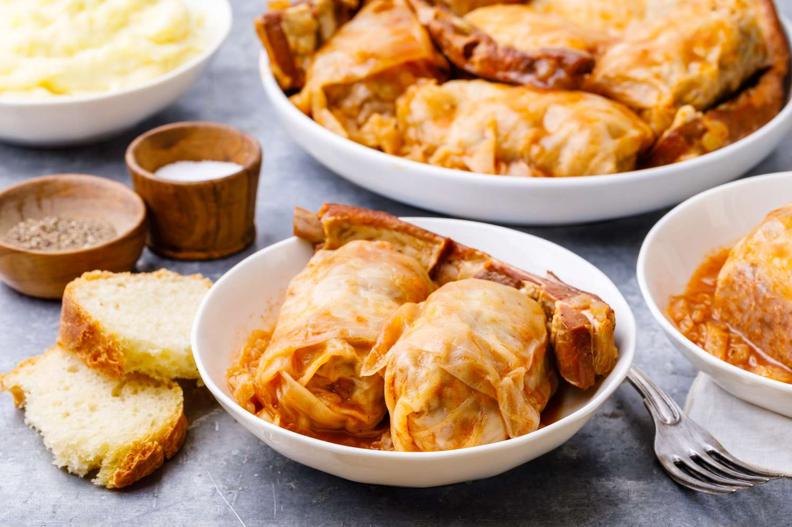

Sarma

Description
Sarma is a traditional meal prepared during winter and one of the main specialties for Slava. Hearty and warm, it is usually served with crusty bread or cornbread.
Ingredients
- 1 pound ground pork
- 1 pound ground beef
- 1 cup rice
- 2 yellow onions
- 2 carrots
- 1 garlic clove
- 1 tbsp Vegeta
- 1 tsp spicy paprika
- 1 tsp mild paprika
- 2 sour cabbage heads
- Bay leaves
- Salt and pepper to taste
- Dried pork neck and pork ribs, or bacon (optionalq)
How to make it
- Chop onion, garlic, and carrots and saute over medium heat
- Add washed rice and mix
- Add the ground meat and spices, cook briefly while it mixes, take it off the stove
- Blanche sour cabbage leaves, cut of the thick root parts of leaves
- Place the cabbage leave with the root facing you in your palm, fill it with the mixture, then roll it in
- Place some leftover cabbage leaves on the bottom of the pot
- Place rolled sarmas in the pot, place the optional dried meats in between them, and cover with some more cabbage leaves
- Fill the pot with water, and add the bay leaves
- Cook with a lid on over medium (just under boiling) heat for about 4 hours
- Serve with crusty bread or cornbread
- Prijatno!